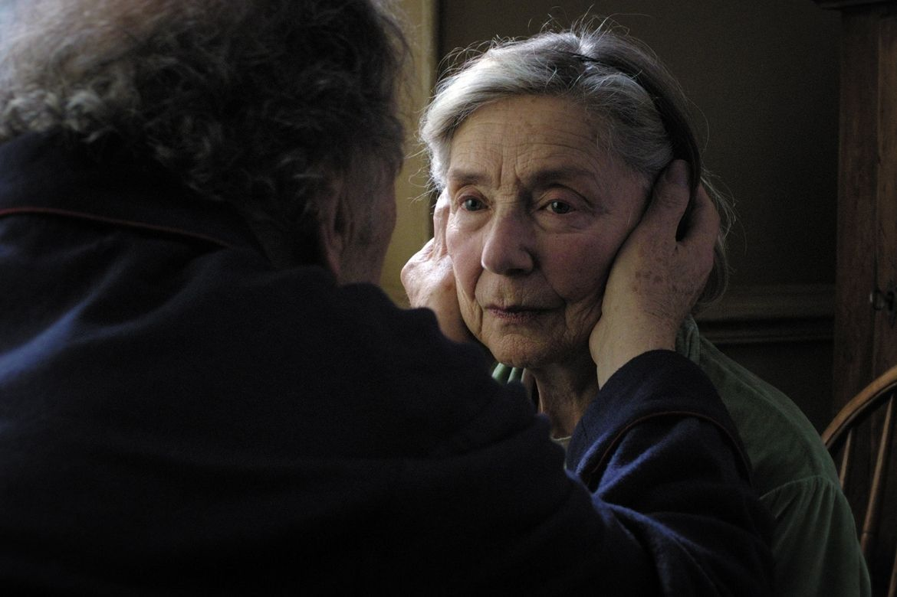
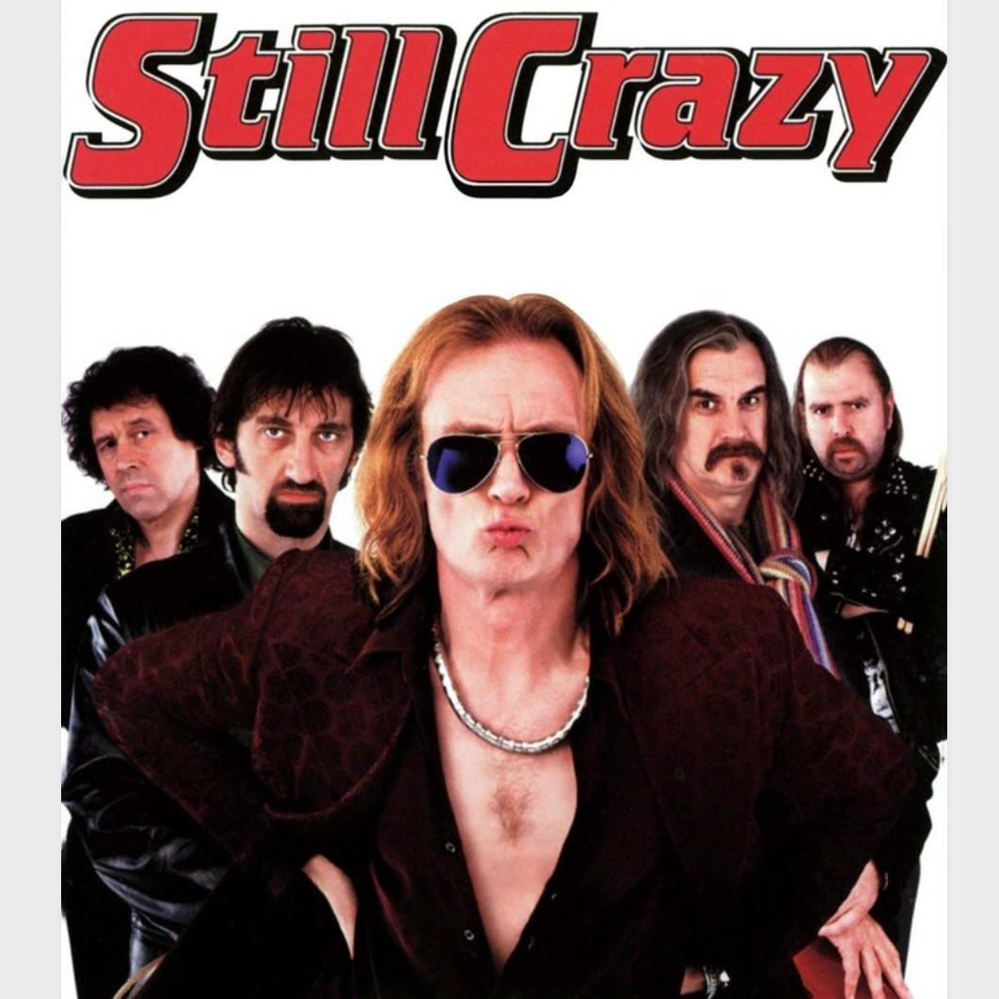
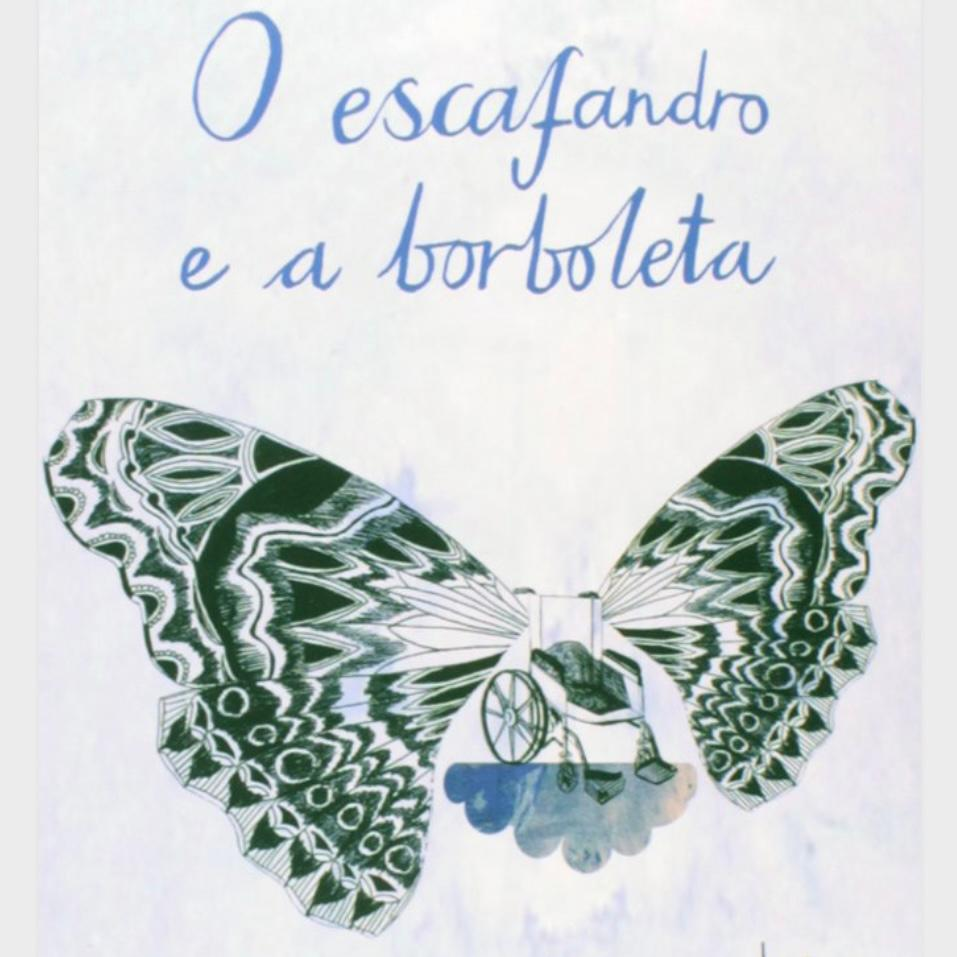
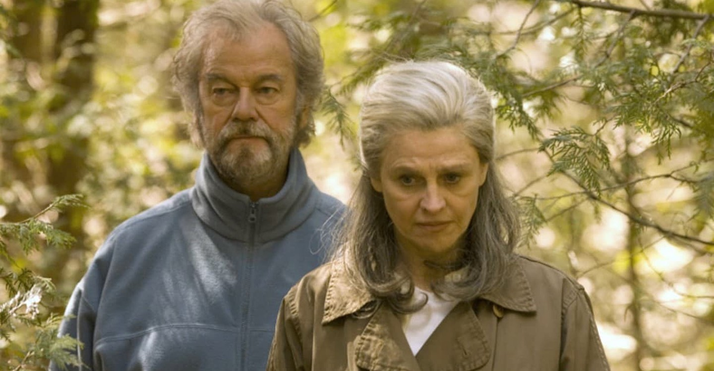

Filmes que abordam a temática

Amor (2012, Michael Haneke)Um casal de idosos enfrenta as consequências do AVC da esposa. O marido se torna cuidador em tempo integral, revelando os desafios físicos e emocionais dessa nova realidade.

Ainda Muito Loucos (The Savages, 2007, Tamara Jenkins)Dois irmãos adultos precisam assumir os cuidados do pai idoso e doente. O filme mostra como o ato de cuidar pode transformar relações familiares e revelar sentimentos profundos.

O Escafandro e a Borboleta (2007, Julian Schnabel)Baseado em fatos reais, o filme narra a história de Jean-Dominique Bauby, que sofre um derrame cerebral e fica com o corpo paralisado, mas mantém a mente ativa. A obra destaca os desafios e a força necessários para cuidar de alguém em estado tão vulnerável.

Longe Dela (Away from Her, 2006, Sarah Polley)Um homem vê sua esposa, diagnosticada com Alzheimer, perder e se afastar dele em uma clínica. Um retrato sensível das complexidades do amor e do cuidado diante da doença.
 Meu
Pai (The Father, 2020, Florian Zeller)
Meu
Pai (The Father, 2020, Florian Zeller)
Com pontuação premiada de Anthony Hopkins, o filme aborda a perspectiva de um idoso com demência e os desafios enfrentados por seus cuidadores.
Diário de uma Paixão (The Notebook, 2004)
Além da famosa história de amor, o filme revela a dedicação de um marido visitando sua esposa todos os dias, mesmo após ela ser diagnosticada com Alzheimer, mostrando o poder do cuidado e da memória afetiva.